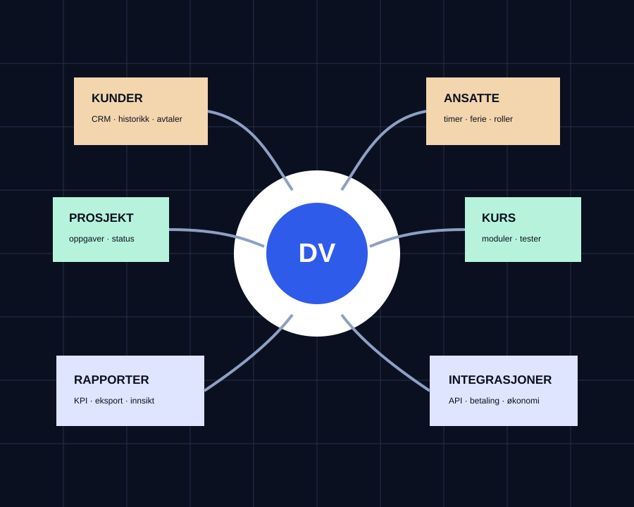
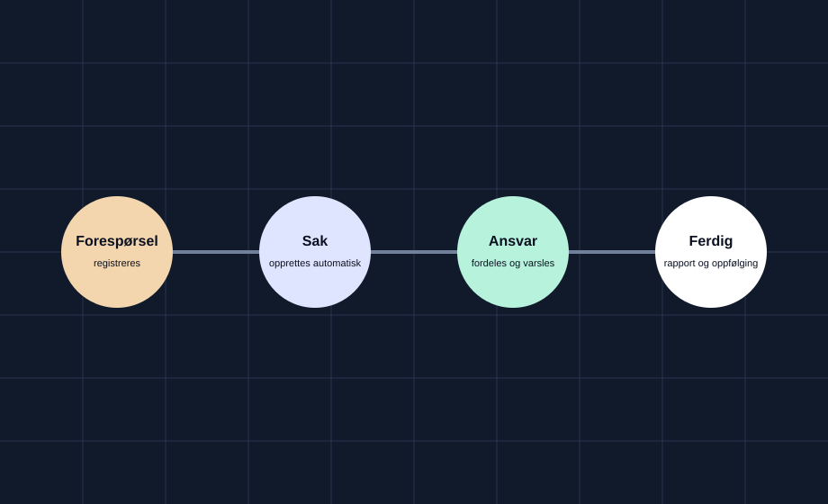
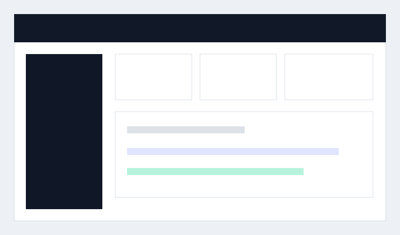
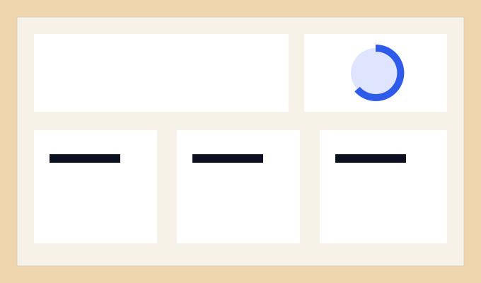
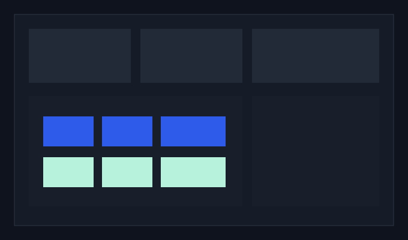

Forenkle en rutine, et skjema eller en oppgave som tar unødvendig mye tid.
Digitale løsninger for en enklere arbeidsdag
Mindre tid på rutiner. Mer tid til jobben.
Digitale Verk lager løsninger som sparer tid, gir bedre oversikt og gjør hverdagen enklere. Det kan være én liten oppgave som bør gå raskere, eller et komplett system som samler hele arbeidsflyten.
Samle flere deler av bedriften i én løsning som kan vokse etter behov.

Ikke enda et stort system med funksjoner som aldri blir brukt. Bare det som faktisk trengs for å gjøre jobben enklere.
01
Hva som kan lages
Fra én enkel funksjon til en komplett løsning for hele bedriften.
En løsning kan starte enkelt og bygges ut senere. Flere deler kan kobles sammen slik at informasjon flyter automatisk mellom ansatte, kunder, prosjekter og administrasjon.
Det betyr mindre dobbeltarbeid, færre feil og bedre oversikt.
Ta en uforpliktende prat ↗02
Bedre flyt
Én handling kan sette resten i gang.
Når en ny forespørsel kommer inn, kan systemet automatisk opprette kunde, sak, oppgave, varsel og dokumentasjon.
Informasjonen skrives inn én gang og følger jobben videre. Det gjør neste steg tydelig og sparer tid for alle som er involvert.

03
Eksempler
Se hvordan ulike behov kan løses.
A
Service og oppdrag
Fra kundehenvendelse til ferdig dokumentert jobb.
Kunder, oppdrag, planlegging, bilder, signering og oppfølging samlet i én enkel flyt.

Se løsningen ↗B
Kurs og opplæring
Kursportal med moduler, tester og sertifikater.
Gi ansatte eller kunder opplæring på ett sted og se hvem som har startet, fullført eller trenger oppfølging.

Se løsningen ↗C
Intern drift
Alt viktig samlet i ett system.
Ansatte, ferie, timer, prosjekter, kunder, rapporter og interne rutiner samlet på ett sted.

Se løsningen ↗Eksemplene viser bare noen muligheter. Innhold, funksjoner og utseende kan tilpasses hvert behov.
04
Når vanlige løsninger ikke er nok.
Informasjonen ligger flere steder.
Samle det viktigste i én oversikt, slik at det blir enklere å finne riktig informasjon.
Den samme jobben gjøres flere ganger.
La systemet flytte informasjon, sende varsler og oppdatere status automatisk.
Arbeidsmåten passer ikke et ferdig system.
Løsningen bygges rundt det som faktisk skjer i arbeidsdagen.
05
Slik jobber vi
Først forstå problemet. Deretter bygge løsningen.
-
01
Finn tidstyvene
Vi ser på hva som tar tid, hva som skaper feil og hvor oversikten forsvinner.
-
02
Vis hvordan det kan fungere
Før utviklingen starter, lages en klikkbar utgave som viser oppbygning og arbeidsflyt.
-
03
Bygg steg for steg
Løsningen bygges i mindre deler, testes og forbedres underveis.
-
04
Utvid ved behov
Nye funksjoner og deler kan legges til når behovene endrer seg.
06
Kontakt
Hva bør bli enklere i arbeidsdagen?
Send en kort beskrivelse av oppgaven eller rutinen. Digitale Verk ser på hva som kan forenkles og hvordan en løsning kan bygges.
kontakt@digitaleverk.no ↗